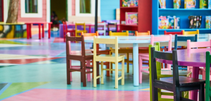

Enfance (3-11 ans)
"L'important c'est qu'un enfant puisse toujours dire ce dont il a envie, mais pas toujours le faire." - Françoise Dolto
Scolarité
La Communauté de Communes Berry Loire Puisaye réunit 2 collèges (Briare et Châtillon-sur-Loire), 13 écoles publiques et une école privée, accueillant les élèves de la petite section au CM2.
Survolez un repère pour afficher les coordonnées de l'établissement.
Écoles du territoire
Autry-le-Châtel
Maternelle et élémentaire
14 rue de l'École (élémentaire)
route de Châtillon (maternelle)
📞 02 38 36 82 62 - 02 38 36 81 88
Beaulieu-sur-Loire
Maternelle et élémentaire
15 rue de Châtillon (élémentaire)
17 rue de Châtillon (maternelle)
📞 02.19.00.49.86 - 02.38.35.85.35
Ousson-sur-Loire
Maternelle et élémentaire
11 rue de l'abreuvoi (élémentaire)
2 bis rue des marronnier (maternelle)
📞 02 38 31 00 51
Briare - École Marcel Gaime
Maternelle
place Saint Roch
📞 02 38 31 25 85
Briare - École du Centre
Élémentaire
3 square Foch
📞 02 38 31 26 49
Briare - École Gustave Eiffel
Maternelle et élémentaire
7, rue de l'Espérance
📞 02 38 31 25 34
Briare - École Sainte-Anne
Maternelle et élémentaire (privée)
5, rue des Grands Jardins
📞 02 38 31 26 48

Bonny-sur-Loire
Maternelle et élémentaire
2 avenue de la Gare
📞 02 38 31 63 57
Châtillon-sur-Loire
Maternelle et élémentaire
place du Champ de foire
📞 02 38 31 40 74
Ouzouër-sur-Trézée
Maternelle et élémentaire
14 rue de la Flamandière (élémentaire)
1 rue du Stade (maternelle)
📞 02 38 31 97 47 / 02 38 31 92 89
RPI et SIIS
RPI Cernoy-en-Berry / Pierrefitte-ès-Bois
• Cernoy-en-Berry : Maternelle, 5 rue d'Autry - 02 38 31 01 00
• Pierrefitte-ès-Bois : Élémentaire, 7 rue de la Mairie - 02 38 31 08 13
SIIS Adon / La Bussière
• Adon : 13 route de la Bussière - 02 38 35 94 69
• La Bussière : 1 rue de Briare - 02 38 35 90 68
CLAS - Contrat Local d'Accompagnement à la Scolarité
Gratuit et ouvert à tous, de l'école élémentaire au lycée
Bonny-sur-Loire
École élémentaire et EVS Bee Mobile
2 avenue de la Gare
📞 02 38 31 63 57
Un accompagnement pour aider votre enfant à mieux réussir à l'école et un soutien pour les parents dans le suivi scolaire.
Accueils de loisirs
Accueil de loisirs Briare
3-11 ans
École Jean Bégault, Briare
📞 02 38 31 24 88 / 07 57 40 10 20
Mercredis + vacances : 7h30-18h30
📧 alsh.briare@cc-berryloirepuisaye.fr
Accueil de loisirs Châtillon-sur-Loire
3-11 ans
École des Marguerites
📞 02 38 31 43 53 / 07 57 40 10 21
Mercredis + vacances : 7h30-18h30
📧 alsh.chatillon@cc-berryloirepuisaye.fr
Autry-le-Châtel
En juillet
8 rue de la Mairie
📞 02 38 36 80 59
Beaulieu-sur-Loire
Les Crayons de couleurs
Association Familles Rurales
15 route de Châtillon
📞 02 38 05 03 84 / 06 70 02 16 12
Bonny-sur-Loire
avenue de la gare
📞 02 38 29 59 00
Mercredis et petites vacances
La Bussière
1 route de Briare
📞 02 38 35 90 68
Mercredis et 1ère semaine des petites vacances
Centre social Saint-Martin
Briare
📞 02 38 38 50 47
Mercredis et vacances scolaires
Accueils périscolaires
Matin et soir dans les écoles - Informations en mairie
Étude surveillée
École Jean Bégault - Briare
Lun-Mar-Jeu-Ven : 16h30-17h30
📞 02 38 37 03 84
Transports scolaires
📧 transports@loiret.fr
📞 02 38 25 48 26
